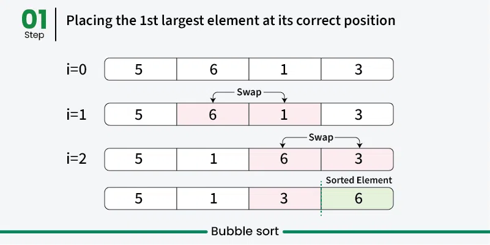
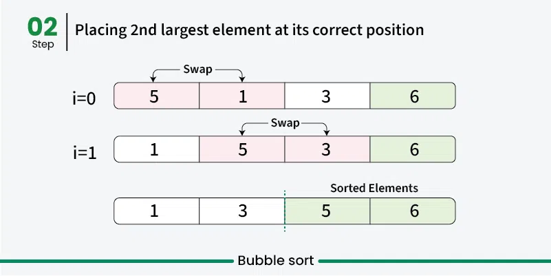
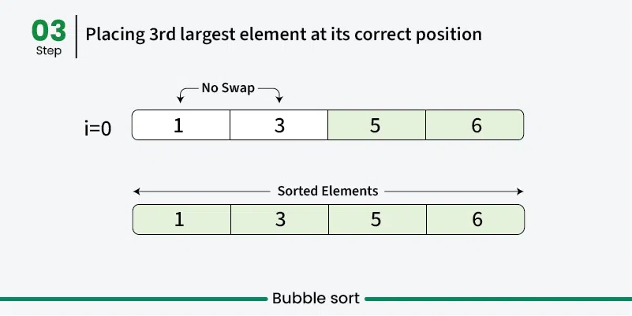

Sorting atau pengurutan adalah proses mengatur data dalam urutan tertentu, biasanya secara ascending (menaik) atau descending (menurun). Pengurutan data sangat penting karena banyak algoritma lain yang lebih efisien ketika data sudah terurut. Selain itu, data yang terurut memudahkan dalam pencarian dan analisis.
#Mengapa Sorting Penting?
Optimasi Pencarian: Algoritma pencarian seperti Binary Search bekerja lebih efisien pada data yang sudah terurut.
Pengolahan Data: Banyak aplikasi yang memerlukan data terurut untuk ditampilkan atau diproses lebih lanjut.
Analisis: Memudahkan dalam melakukan analisis statistik dan visualisasi data.
#Algoritma Sorting
Kedua algoritma ini cocok untuk dipelajari karena konsepnya yang sederhana dan mudah diimplementasikan.
#Bubble Sort
Bubble Sort adalah salah satu algoritma sorting yang paling sederhana. Cara kerjanya adalah dengan membandingkan setiap pasangan elemen bersebelahan dan menukarnya jika berada dalam urutan yang salah. Proses ini diulang hingga seluruh data terurut dengan baik.
Cara Kerja Bubble Sort
Bandingkan Elemen Bersebelahan
Mulai dari elemen pertama, bandingkan dengan elemen berikutnya.
Tukar Jika Perlu
Jika elemen pertama lebih besar dari elemen kedua, tukar posisi keduanya.
Ulangi Proses
Lakukan proses ini untuk seluruh elemen dalam array. Setiap iterasi akan "menggelembung" elemen terbesar ke posisi akhir.
Penghentian
Proses berhenti ketika tidak ada lagi elemen yang perlu ditukar, yang berarti data sudah terurut.
Contoh Ilustrasi Bubble Sort
Data Awal: [5, 6, 1, 3]
Data Terurut (Ascending): [1, 3, 5, 6]
Langkah-langkah:
Iterasi 1:
Bandingkan 5 dan 6
5 ≤ 6 → Tidak perlu ditukar.
Array: [5, 6, 1, 3]
Bandingkan 6 dan 1
6 > 1 → Tukar posisi kedua elemen.
Array: [5, 1, 6, 3]
Bandingkan 6 dan 3
6 > 3 → Tukar posisi kedua elemen.
Array: [5, 1, 3, 6]
Pada akhir iterasi pertama, elemen terbesar (6) sudah berada di posisi terakhir.

Bubble Sort Iterasi 1
Iterasi 2:
Bandingkan 5 dan 1
5 > 1 → Tukar posisi kedua elemen.
Array: [1, 5, 3, 6]
Bandingkan 5 dan 3
5 > 3 → Tukar posisi kedua elemen.
Array: [1, 3, 5, 6]
Pada akhir iterasi kedua, elemen terbesar berikutnya (5) sudah berada di posisi yang benar.

Bubble Sort Iterasi 2
Iterasi 3:
Bandingkan 1 dan 3
1 ≤ 3 → Tidak perlu ditukar.
Array: [1, 3, 5, 6]
Tidak ada pertukaran yang dilakukan pada iterasi ini, sehingga algoritma dapat berhenti karena data sudah terurut.

Bubble Sort Iterasi 3
Hasil Akhir
Setelah melakukan beberapa iterasi, data awal [5, 6, 1, 3] berhasil diurutkan menjadi [1, 3, 5, 6] menggunakan Bubble Sort.
Implementasi Bubble Sort di Python
Berikut adalah contoh implementasi Bubble Sort menggunakan data awal [5, 6, 1, 3]:
def bubble_sort(arr):
"""
Mengurutkan list arr menggunakan algoritma Bubble Sort.
:param arr: List data yang akan diurutkan
:return: List yang sudah terurut
"""
n = len(arr)
for i in range(n):
# Flag untuk memeriksa apakah ada pertukaran
swapped = False
for j in range(0, n-i-1):
if arr[j] > arr[j+1]:
# Tukar elemen
arr[j], arr[j+1] = arr[j+1], arr[j]
swapped = True
# Jika tidak ada pertukaran, hentikan algoritma
if not swapped:
break
return arr
# Contoh penggunaan
data = [5, 6, 1, 3]
hasil = bubble_sort(data)
print("Hasil Bubble Sort:", hasil)
Output:
Hasil Bubble Sort: [1, 3, 5, 6]
Penjelasan Kode
Fungsi bubble_sort:
Menerima sebuah list arr yang akan diurutkan.
Menggunakan dua loop: loop luar untuk jumlah iterasi dan loop dalam untuk membandingkan serta menukar elemen.
Flag swapped digunakan untuk memeriksa apakah ada pertukaran yang terjadi dalam satu iterasi. Jika tidak ada pertukaran, berarti data sudah terurut dan algoritma dapat berhenti lebih awal.
Proses Iterasi:
Pada setiap iterasi, elemen terbesar akan "menggelembung" ke posisi akhir yang benar.
Proses ini diulang hingga tidak ada lagi pertukaran yang diperlukan.
Analisis Kompleksitas Bubble Sort
Waktu:
Kasus Terbaik: O(n) - Jika data sudah terurut sejak awal.
Kasus Terburuk: O(n²) - Jika data terbalik urutannya.
Rata-rata: O(n²)
Ruang Tambahan: O(1) - Hanya menggunakan variabel sementara untuk pertukaran.
Kapan Menggunakan Bubble Sort?
Cocok untuk:
Dataset kecil.
Pengajaran konsep dasar algoritma sorting.
Situasi di mana stabilitas sorting (elemen dengan nilai yang sama tetap urut) penting.
Tidak Direkomendasikan untuk:
Dataset besar karena kurang efisien dibandingkan algoritma sorting lainnya seperti Quick Sort atau Merge Sort.
#Selection Sort
Selection Sort adalah algoritma sorting yang bekerja dengan cara memilih elemen terkecil dari kumpulan data yang belum terurut dan menempatkannya di posisi yang benar. Proses ini diulang hingga seluruh data terurut.
Cara Kerja Selection Sort
Cari Elemen Terkecil: Mulai dari elemen pertama, cari elemen terkecil dalam kumpulan data yang belum terurut.
Tukar Elemen: Tukar elemen terkecil yang ditemukan dengan elemen pertama dari kumpulan data yang belum terurut.
Ulangi Proses: Pindahkan ke elemen berikutnya dan ulangi langkah 1 dan 2 hingga seluruh data terurut.
Contoh Ilustrasi Selection Sort
Mari kita urutkan data [64, 25, 12, 22, 11] menggunakan Selection Sort. Berikut adalah langkah-langkahnya:
Berikut adalah contoh implementasi Selection Sort menggunakan data awal [64, 25, 12, 22, 11]:
def selection_sort(arr):
"""
Mengurutkan list arr menggunakan algoritma Selection Sort.
:param arr: List data yang akan diurutkan
:return: List yang sudah terurut
"""
n = len(arr)
for i in range(n):
# Asumsikan elemen terkecil adalah di posisi i
min_idx = i
for j in range(i+1, n):
if arr[j] < arr[min_idx]:
min_idx = j
# Tukar elemen terkecil dengan elemen di posisi i
arr[i], arr[min_idx] = arr[min_idx], arr[i]
return arr
# Contoh penggunaan
data = [64, 25, 12, 22, 11]
hasil = selection_sort(data)
print("Hasil Selection Sort:", hasil)
Output:
Hasil Selection Sort: [11, 12, 22, 25, 64]
Penjelasan Kode
Fungsi selection_sort:
Menerima sebuah list arr yang akan diurutkan.
Menggunakan dua loop: loop luar untuk memilih posisi yang akan diisi dengan elemen terkecil dan loop dalam untuk mencari elemen terkecil tersebut.
Setelah menemukan elemen terkecil, menukar posisi elemen tersebut dengan elemen di posisi yang benar.
Proses Iterasi:
Pada setiap iterasi, elemen terkecil dari bagian yang belum terurut dipindahkan ke posisi yang benar.
Proses ini diulang hingga seluruh data terurut.
Analisis Kompleksitas Selection Sort
Waktu:
Kasus Terbaik: O(n²)
Kasus Terburuk: O(n²)
Rata-rata: O(n²)
Ruang Tambahan: O(1) - Hanya menggunakan variabel sementara untuk penyimpanan indeks.
Kapan Menggunakan Selection Sort?
Cocok untuk:
Dataset kecil.
Situasi di mana jumlah pertukaran perlu diminimalkan karena hanya satu pertukaran per iterasi.
Ketika stabilitas sorting tidak menjadi masalah utama.
Tidak Direkomendasikan untuk:
Dataset besar karena kurang efisien dibandingkan algoritma sorting lainnya seperti Quick Sort atau Merge Sort.
#Perbandingan Bubble Sort dan Selection Sort
Aspek
Bubble Sort
Selection Sort
Konsep Dasar
Menukar elemen bersebelahan jika perlu
Memilih elemen terkecil dan menukarnya dengan posisi yang benar
Kompleksitas Waktu
O(n²)
O(n²)
Jumlah Pertukaran
Banyak (setiap kali ada elemen yang perlu ditukar)
Sedikit (satu pertukaran per iterasi)
Stabilitas
Stabil (elemen dengan nilai yang sama tetap urut)
Tidak stabil (elemen dengan nilai yang sama bisa berubah urutannya)
Penggunaan Memori
O(1)
O(1)
#Kapan Menggunakan Bubble Sort vs. Selection Sort?
Bubble Sort:
Kelebihan:
Cocok untuk dataset yang hampir terurut.
Stabil, sehingga mempertahankan urutan elemen dengan nilai yang sama.
Mudah dipahami dan diimplementasikan.
Kekurangan:
Kurang efisien untuk dataset besar.
Banyak pertukaran elemen, yang bisa memperlambat proses pada dataset besar.
Selection Sort:
Kelebihan:
Jumlah pertukaran elemen lebih sedikit dibandingkan Bubble Sort.
Lebih efisien dalam kasus di mana pertukaran elemen mahal.
Mudah dipahami dan diimplementasikan.
Kekurangan:
Tidak stabil, sehingga urutan elemen dengan nilai yang sama bisa berubah.
Kurang efisien untuk dataset besar dibandingkan algoritma sorting lainnya.
#Kesimpulan
Dalam materi ini, telah dibahas dua algoritma sorting dasar yaitu Bubble Sort dan Selection Sort. Keduanya memiliki konsep yang sederhana dan mudah dipahami, cocok untuk pemula dalam memahami dasar-dasar algoritma sorting. Meskipun kedua algoritma ini tidak efisien untuk dataset besar, mereka memberikan dasar yang kuat untuk memahami algoritma sorting yang lebih kompleks dan efisien di masa depan.